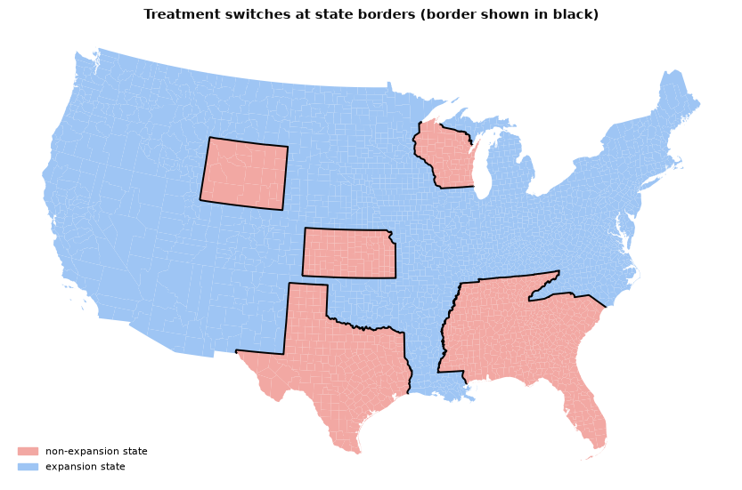
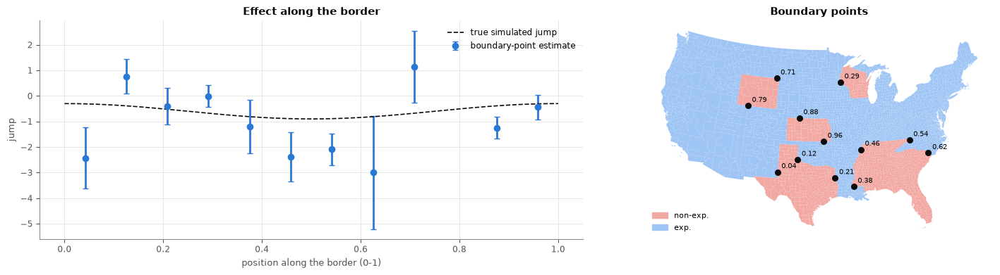

This notebook estimates a policy effect at a state border, where treatment switches on abruptly and other conditions change smoothly. Scenario B follows the 2024 Medicaid-expansion borders: the assignment is real, and the jump in diabetes is simulated. The last section turns to the real uninsured share, where no ground truth exists.
The estimator is a sharp geographic regression discontinuity, with an Imbens-Kalyanaraman bandwidth, segment fixed effects, and boundary-point effects. The class is GeographicRDD in geolattice.spatial_analysis.spatialcausal.
State borders are natural experiments: a state policy switches on abruptly at the border, while geography, climate and most social conditions change smoothly across it. Comparing counties just on either side identifies the policy’s effect at the border.
Scenario B. A hypothetical state policy whose map follows the 2024 Medicaid-expansion map: 41 jurisdictions (including DC) had adopted expansion and 10 had not (AL, FL, GA, KS, MS, SC, TN, TX, WI, WY) (KFF). The assignment is real; the effect on diabetes is simulated:
where \(p_i\in[0,1]\) is the position of county \(i\)’s nearest border point along the border, so the jump varies along the border. \(Y_i(0)\) is the real 2024 diabetes prevalence plus the smooth \(U\).
At the end we analyse a real outcome, the uninsured share, for which no ground truth exists.
Installation. This notebook needs installation option 3 (core, spatial analysis and spatial statistics): pip install "geolattice[statistics]". See “Installation options” in the GeoLattice README.
Code
import warningswarnings.filterwarnings("ignore")import numpy as np, pandas as pd, matplotlib.pyplot as pltimport geopandas as gpdimport geolattice.spatial_analysis.spatialcausal as sc, countycausal as cc, tutorial_style as tsfrom geolattice.spatial_analysis.spatialcausal import vizts.use()gB, border, tb = cc.scenario_state_policy()xy = cc.coords_km(gB)T = gB["T_state"].to_numpy()print(f"border length: {border.length:,.0f} km; counties in expansion states: {T.sum()} of {len(T)}")fig, ax = plt.subplots(figsize=(10, 5.6))ts.county_map(gB, "T_state", ax, categorical=True, colors=["#f2a8a3", "#9ec5f4"], legend_labels=["non-expansion state", "expansion state"], title="Treatment switches at state borders (border shown in black)")gpd.GeoSeries([border], crs=None).scale(1000, 1000, origin=(0, 0)).plot(ax=ax, color="black", lw=1.4)plt.tight_layout()
border length: 10,812 km; counties in expansion states: 2139 of 3109

The sharp RDD
Let the running variable be the signed distance to the border,
\[r_i=\begin{cases}+\,d(s_i,\mathcal B) & T_i=1\\ -\,d(s_i,\mathcal B) & T_i=0,\end{cases}\]
so treatment is a deterministic function of location, \(T_i=\mathbb 1\{r_i\ge 0\}\) (a sharp design). If both potential-outcome regressions \(\mathbb E[Y(t)\mid r]\) are continuous at \(r=0\), then
a separate line on each side. \(\hat\tau\) is the gap between the two intercepts. The triangular kernel \(K(u)=(1-|u|)_+\) is optimal for estimation at a boundary point.
Bandwidth. Imbens & Kalyanaraman (2012) minimise the asymptotic MSE,
with \(f(0)\) the density of \(r\) at the border, \(\sigma^2_\pm\) the conditional variances, \(m''_\pm\) the curvatures of each side and \(r_\pm\) regularisation terms. (\(C_K=3.44\) for the triangular kernel.)
Inference.\(\hat\tau\) is a weighted least-squares coefficient with influence contributions \(\psi_i=n\,[(A^\top WA)^{-1}a_i]_\tau\,w_i\hat e_i\), so heteroskedasticity-robust and Conley standard errors follow as in notebook 01.
Geography-specific additions
Segment fixed effects (Dell, 2010): cut the border into \(S\) segments and add a dummy for each county’s nearest segment, so treated and control counties are compared only along the same stretch of border, not Texas against Wisconsin.
Boundary-point effects (Keele & Titiunik, 2015): at a point \(b\) on the border, fit a local linear regression in the two coordinates on each side, with weights in the Euclidean distance to \(b\); the effect at \(b\) is the difference of the intercepts. This traces how the effect varies along the border.
A pre-existing discontinuity in the real data
Before adding any simulated effect, run the RDD on the real 2024 diabetes prevalence. State borders bundle many differences (other state policies, how survey-based county estimates are produced), so real outcomes can already jump.
Code
def fit(yv, **kw):return sc.GeographicRDD(border, se="conley", cutoff=100, **kw).fit(None, T, gB[yv].to_numpy(), xy)rows = {}for name, col in [("real diabetes (no simulated effect)", "diabetes_pct"), ("Y(0) = real + smooth U", "y0"), ("simulated outcome Y", "y_rdd")]:for seg in (None, 20): r = fit(col, n_segments=seg) e = r.result_["effect_at_boundary"] rows[(name, "none"if seg isNoneelse"20 segments")] = {"jump": e.estimate, "se (Conley)": e.se,"bandwidth km": r.bandwidth_,"counties in bandwidth": r.result_._stats["n_in_bandwidth"]}pd.DataFrame(rows).T.round(3)
jump
se (Conley)
bandwidth km
counties in bandwidth
real diabetes (no simulated effect)
none
-0.359
0.329
133.615
1135.0
20 segments
-0.221
0.231
133.615
1135.0
Y(0) = real + smooth U
none
-0.319
0.369
133.045
1133.0
20 segments
-0.180
0.238
133.045
1133.0
simulated outcome Y
none
-0.979
0.374
136.625
1166.0
20 segments
-0.842
0.244
136.625
1166.0
The real data show a small negative jump that is not statistically significant (and smaller with segment fixed effects). The simulated outcome’s jump combines that pre-existing discontinuity with the simulated effect.
What is the true estimand?
The simulated jump varies along the border, so the RDD estimand is a weighted average of \(-0.6+0.3\cos(2\pi p_i)\) over the counties that drive the estimate: those near the border, weighted by the kernel. A difference in discontinuities, the jump in \(Y\) minus the jump in \(Y(0)\) at the same bandwidth, removes the pre-existing discontinuity. This is only possible in a simulation; with real data one would use pre-policy outcomes instead.
Covariate balance. Pre-treatment covariates should not jump at the border. We run the same RDD with each covariate as the outcome. One covariate needs care: the uninsured share is itself affected by Medicaid expansion, so it is a post-treatment variable. A jump in it is an effect of the real policy, not a failure of the design, and it must not be used as a control.
Code
bal = r_y.balance(gB[cc.COVARIATES].to_numpy(), names=cc.COVARIATES)bal["flag"] = np.where(bal.p_value <0.05, "jumps at border", "")bal.round(3)
jump
se
p_value
flag
covariate
log_income
-0.019
0.026
0.453
uninsured_pct
-1.244
0.275
0.000
jumps at border
rural_pct
-1.871
3.792
0.622
age65_pct
0.053
0.546
0.923
unemployment_pct
-0.269
0.145
0.063
child_poverty_pct
0.734
1.066
0.491
smoking_pct
0.056
0.506
0.912
inactivity_pct
-0.083
0.702
0.905
obesity_pct
0.886
0.496
0.074
food_env
-0.096
0.117
0.410
log_pcp
0.034
0.087
0.701
black_pct
-1.152
1.313
0.380
broadband_pct
-0.347
0.953
0.716
Apart from uninsurance, no covariate jumps at the 5% level once border segments are compared; unemployment and obesity are borderline (p ≈ 0.06-0.07, and both are significant without segment fixed effects). State borders are compound treatments: many state policies change at the same line, so a real border RDD identifies the effect of the whole bundle. Our simulated effect is identified only because we know it is the sole simulated difference.
Bandwidth sensitivity. A credible estimate should not depend heavily on \(h\).
Boundary-point estimates at 12 points along the border, compared with the true simulated jump (plus the pre-existing local discontinuity, which this method cannot separate). Points are ordered by position along the border geometry.
Code
ab = r_y.along_boundary(12, bandwidth=2.5* h)ab["true simulated jump"] = tb["jump_at"](ab["position"])fig, ax = plt.subplots(1, 2, figsize=(15, 4), gridspec_kw={"width_ratios": [1.2, 1]})ok = ab.estimate.notna()ax[0].errorbar(ab.position[ok], ab.estimate[ok], yerr=1.96* ab.se[ok], fmt="o", capsize=3, color=ts.BLUE, label="boundary-point estimate")pp = np.linspace(0, 1, 200)ax[0].plot(pp, tb["jump_at"](pp), "--", color=ts.TRUTH, lw=1.2, label="true simulated jump")ax[0].set_xlabel("position along the border (0-1)"); ax[0].set_ylabel("jump"); ax[0].legend()ax[0].set_title("Effect along the border")ts.county_map(gB, "T_state", ax[1], categorical=True, colors=["#f2a8a3", "#9ec5f4"], legend_labels=["non-exp.", "exp."])ax[1].scatter(ab.x *1000, ab.y *1000, c=ts.INK, s=30, zorder=5)for _, r in ab.iterrows(): ax[1].annotate(f"{r.position:.2f}", (r.x *1000, r.y *1000), fontsize=7.5, xytext=(4, 4), textcoords="offset points")ax[1].set_title("Boundary points")plt.tight_layout()print(f"correlation of boundary-point estimates with the true jump: "f"{np.corrcoef(ab.estimate[ok], ab['true simulated jump'][ok])[0, 1]:.2f}")
correlation of boundary-point estimates with the true jump: 0.33

Boundary-point estimates are noisy: each uses only the counties near one point, and real discontinuities in \(Y(0)\) vary along the border too. They are useful for spotting where an effect concentrates, not for precise local claims.
Real-data application: uninsurance at expansion borders
Now a real outcome with no simulated effect: the share of the population without health insurance (CHR 2024; small-area estimates). Medicaid expansion is designed to reduce uninsurance, so we expect a negative jump entering expansion states.
Code
pre = [c for c in cc.COVARIATES if c !="uninsured_pct"]out = {}for seg in (None, 20):for donut in (0, 25): r = sc.GeographicRDD(border, n_segments=seg, donut=donut, se="conley", cutoff=100).fit( gB[pre].to_numpy(), T, gB["uninsured_pct"].to_numpy(), xy) e = r.result_["effect_at_boundary"] out[f"segments={seg or0}, donut={donut} km"] = {"jump (points)": e.estimate, "se": e.se, "bandwidth km": r.bandwidth_}real = pd.DataFrame(out).Treal.round(3)
jump (points)
se
bandwidth km
segments=0, donut=0 km
-1.519
0.388
201.395
segments=0, donut=25 km
-1.345
0.528
201.395
segments=20, donut=0 km
-1.300
0.259
201.395
segments=20, donut=25 km
-1.455
0.355
201.395
Uninsurance is about 1.3-1.5 percentage points lower just inside expansion states (relative to a mean of about 5.3%), stable across segment fixed effects and a 25 km “donut” that drops the counties closest to the border.
Caveats before reading this causally:
Compound treatment. Expansion and non-expansion states differ in many other policies at the same border.
Measurement. County uninsurance in CHR comes from model-based small-area estimates, which can borrow strength within states and so may sharpen jumps at state lines.
County size. Counties are large and their centroids are a coarse running variable.
It is a well-posed descriptive discontinuity consistent with the expected direction, not a definitive estimate of the expansion effect.
Summary and Conclusions
A border RDD compares like with like, but only at the border, and only for the bundle of everything that changes there.
Check the outcome for discontinuities that exist without the policy (placebos, pre-period data) and use segment fixed effects to compare along the same stretch of border.
Exclude post-treatment variables from covariates and balance tests.
Report bandwidth sensitivity. Effects along the border are informative but noisy.